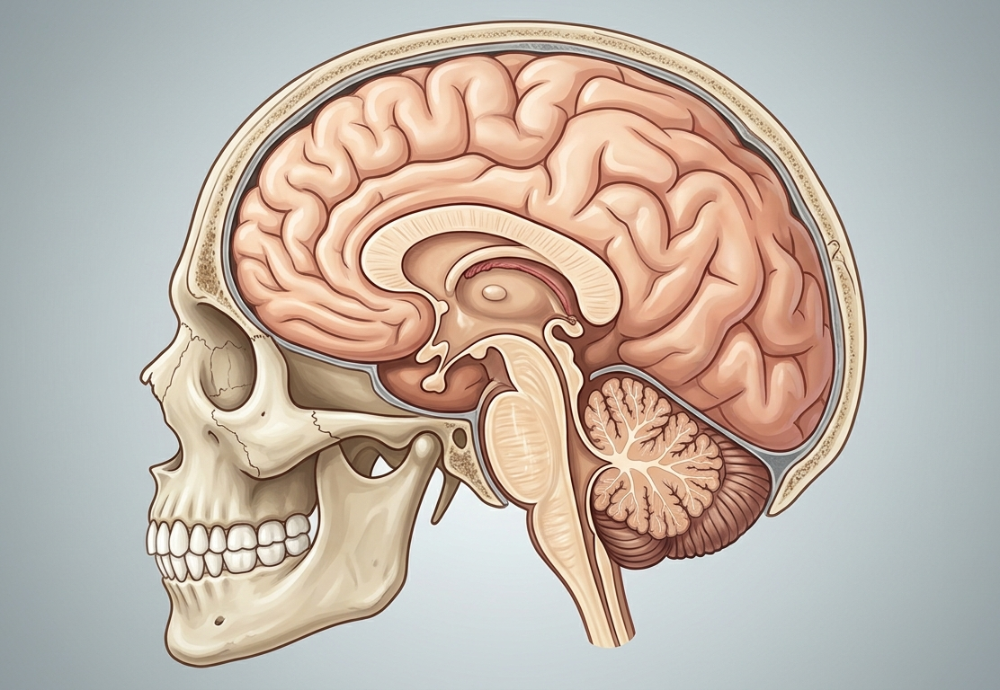

Esta pagina es ocupada para mostrar mi sistema de cambio de habitos diseñado por mi, no soy ningun psicologo, solo un humano como tú que busca un cambio radical en su vida, en este apartado muetro el constante progreso y cada uno de los pasos que sigo, mi proposito es ayudar a quien tambien busca un cambio, aqui puedes encontrar el dia a dia de mi transformación, soy estudiante, me gusta la idea de conocer más como funciona la vida. Aqui te cuetno mi diario, mi dia a dia, espero te sirva y puedas aplicarlo tu tambien, soy mi propio mono de prueba, esto es real, te menciono cada detalle, cada resultado, mis conflictos en el camino. Confio grandemente en que sere todo lo que quiera ser, no me cansare hasta lograr todos mis objetivos. La infromación de cambiar tu vida al igual que yo, está en tus manos, esta es la señal y el truco magico que esperabas, era una pagia de un chico con su propio sistema de vida, creencias y adaptacion individual. Y porque digo que está es una señal?, porque si aplicas lo mismo optendras los mismos resultaos o muy similares, puedes guiarte y adaptarlo a tu forma, puedes aprender y extraer lo mas relevante para ti, ten criterio propio.

Inicie con la creación de habitos NO NEGOCIABLES, como lo es el levantarme a las 5:15am todos los dias para ir a la universidad, una rutina de cada mañana que consiste en realizar 10 saltos de tijera al sonar el despertador, luego tiendo mi cama y continuo bebiendo un baso de agua lleno, ir al baño, me lavo la cara para luego colcoarme bloqueador solar en mi rostro y crema corporal sobre mi cuerpo. Continuo con vestirme y peinarme, finalmente desayuno y me cepillo los dientes ademas de añádir enjuague bucal.